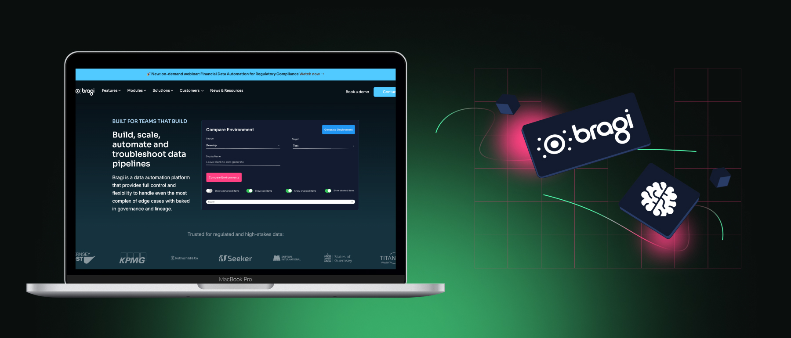

Bragi's product is technically complex, serving data engineers and compliance teams in regulated finance. The website needed to explain sophisticated concepts like data lineage, field-level traceability, and AI governance without alienating non-technical stakeholders who also visit the site.
We structured the site around use cases rather than features, letting visitors find themselves in the content. Each page was written to work at two levels: a quick scan for busy decision-makers and a deeper read for technical evaluators. We also picked up HTML, CSS, and JavaScript along the way to optimise the site directly.